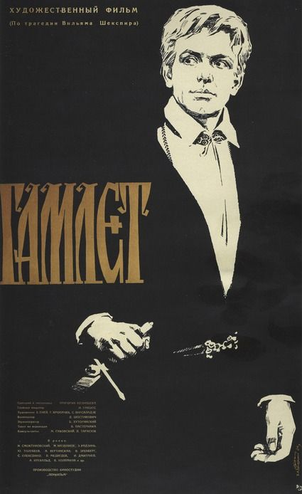

Fiche technique
- Titre original
- Гамлет (Gamlet)2
- Réalisation
- Grigori Kozintsev — co-réalisation Iossif Chapiro1
- Adaptation
- Grigori Kozintsev, d'après Hamlet de William Shakespeare dans la traduction russe de Boris Pasternak (1941)2
- Photographie
- Jonas Gricius12
- Décors
- Evgueni Enei et Gueorgui Kropatchev2 — la notice anglophone crédite pour sa part S. Virsaladze au poste de chef décorateur, quand la notice française lui attribue les costumes1
- Costumes
- Simon Virsaladze2
- Musique
- Dmitri Chostakovitch, direction Nikolaï Rabinovitch2
- Montage
- Evguenia Makhankova2
- Production
- Lenfilm12
- Format
- Noir et blanc, Sovscope anamorphique 2.35:1, son stéréophonique 4 pistes12 — la largeur du film varie selon les sources : 70 mm chez Fairfax3, 75 mm chez Catania5
- Interprétation
- Innokenti Smoktounovski (Hamlet), Mikhaïl Nazvanov (Claudius), Elza Radziņa (Gertrude), Youri Toloubeïev (Polonius), Anastasia Vertinskaïa (Ophélie), Vladimir Erenberg (Horatio), Stepan Oleksenko (Laërte), Igor Dmitriev (Rosencrantz), Vadim Medvedev (Guildenstern), Aadu Krevald (Fortinbras)12
- Durée
- 140 minutes selon la notice anglophone1, 148 minutes selon la notice française2 — divergence non tranchée ici
- Sortie
- 24 juin 196412
- Distinctions
- Prix spécial du jury, Mostra de Venise 1964 (et nomination au Lion d'or) ; Sutherland Trophy du British Film Institute ; meilleur film au festival Shakespeare de Wiesbaden 1964 ; Prix Lénine 1965 à Kozintsev et Smoktounovski2 — la notice anglophone parle d'un Prix d'État de l'URSS1 ; nominations aux BAFTA 1966 (meilleur film, meilleur acteur étranger) et au Golden Globe 1967 du meilleur film en langue étrangère12

Synopsis
L'argument est celui de Shakespeare, que Kozintsev suit fidèlement quoique en l'abrégeant1. Le prince Hamlet rentre à Elseneur pour les funérailles de son père et y trouve un mariage : sa mère Gertrude a épousé Claudius, frère du roi mort. Le spectre du père lui désigne l'assassin et lui commande vengeance. Hamlet contrefait la folie, éprouve la culpabilité de Claudius par le détour d'une représentation théâtrale, tue Polonius par méprise, perd Ophélie — devenue folle, puis noyée —, et meurt au terme du duel truqué avec Laërte, dans un dénouement que le film conserve tel que Shakespeare l'a écrit4.
Ce que le film ajoute n'est pas de l'intrigue, c'est un lieu. Chez Kozintsev, Elseneur n'est pas un décor où se joue une tragédie familiale : c'est une forteresse de pierre battue par la Baltique, un État en ordre de marche, et la question de savoir si le prince peut y respirer précède celle de savoir s'il va se venger.
Contexte de production
Le film sort le 24 juin 1964, pour le quatrième centenaire de la naissance de Shakespeare2 ; c'est la première version soviétique du Hamlet au cinéma1. Kozintsev n'y arrive pas en terrain neuf : il avait monté la pièce au théâtre Pouchkine de Leningrad en 19541. Dix ans séparent la scène de l'écran, et ces dix ans sont ceux du Dégel.
Le film est d'abord une conjonction de trois trajectoires soviétiques majeures : Kozintsev, vétéran de l'avant-garde des années 1920 ; Boris Pasternak, dont la traduction de 1941 fournit le texte — Pasternak mort en 1960, après la disgrâce du Docteur Jivago ; et Dmitri Chostakovitch à la musique3. Daniel Fairfax souligne que cette rencontre suffit à faire du film un événement : trois des plus grands artistes du pays sur un seul objet3.
Refuser le studio
Le parti pris de production est explicite et lourd de conséquences : Kozintsev a écarté les décors de studio, estimant que « la clé pour réincarner les mots de Shakespeare en images visuelles ne peut être trouvée que dans la nature »1. Il a nommé lui-même son lexique — la pierre, le fer, le feu, la terre et la mer — de préférence à toute reconstitution d'époque1.
Les sources divergent, en revanche, sur la localisation exacte d'Elseneur, et la divergence est instructive. La notice française indique que le château monumental fut construit pour le tournage sur la côte rocheuse de la Baltique, à 28 km de Tallinn, sur des plans d'Evgueni Enei2 ; la notice anglophone situe les extérieurs à la forteresse d'Ivangorod, à la frontière russo-estonienne1 ; Fairfax décrit un Elseneur assemblé par le montage à partir de plusieurs lieux, des côtes baltes aux rivages de Crimée3 ; et Saviour Catania précise que la plage retenue pour « Être ou ne pas être » est une plage rocheuse de Crimée, choisie après que Kozintsev eut expérimenté plusieurs autres lieux5. Les indications ne se contredisent qu'en apparence : le château du film est une construction de montage autant que de maçonnerie — ce qui, chez un ancien de l'avant-garde des années 1920, ne surprend pas.
Le poison, et ce qu'il désigne
Kozintsev a beaucoup écrit sur la pièce, et ses formules éclairent le film mieux que n'importe quel commentaire. Sa lecture est celle d'une contamination générale : « le poison n'a pas été injecté seulement dans le sang du roi légitime du Danemark, mais aussi dans le système circulatoire de la société. Tout était infecté »5. Et encore : « Le poison clôt cette histoire. Et le poison la commence »5.
Deux autres phrases, citées par Catania, indiquent que le cinéaste ne parle pas de toxicologie : « un autre poison, d'une bien plus grande puissance, a détruit depuis longtemps l'organisme spirituel » ; « la lèpre spirituelle a été causée par le microbe du carriérisme »5. Le mot est lâché — carriérisme —, et il n'appartient pas au vocabulaire du Danemark médiéval. Ce que Kozintsev décrit là, en 1964, est un mal d'appareil : la corruption des hommes qui montent. Il ne dit pas où il l'a observé.
Le film fut le plus gros succès public soviétique de l'année 19643.
Structure narrative
Fidèle mais abrégé : la formule revient dans toutes les notices, et elle mérite d'être regardée de près, car les coupes de Kozintsev dessinent une lecture1. Deux suppressions sont décisives. La première est le conseil d'Hamlet aux comédiens — c'est-à-dire le seul passage où le prince énonce une théorie du jeu et de la représentation4. La seconde est la tirade vengeresse d'Hamlet pendant la prière de Claudius : Kozintsev la retire et montre à la place le roi tombant à genoux sous l'effet de la peur4.
Le résultat est net : ce Hamlet parle moins de lui-même et de son art, et l'on voit davantage ce que le pouvoir, en face, éprouve. Le film déplace le centre de gravité de la conscience du prince vers le rapport de forces qui l'enserre.
La durée moyenne des plans — vingt-quatre secondes1 — signale un cinéma de la tenue et non du découpage nerveux. C'est le paradoxe formel du film, relevé par Fairfax : sous une apparence classique, Kozintsev reste un homme du montage, mais il l'applique non plus à la durée des plans, à la manière des années 1920, mais à la géographie — c'est Elseneur lui-même, assemblé de morceaux distants, qui est monté3.
Le monologue comme énigme à déchiffrer
Reste la question qui décide de tout Hamlet filmé : que faire des monologues ? Kozintsev l'a explicitement déplacée. Pour lui, le problème n'est pas de savoir s'il faut les conserver en entier, ni s'ils doivent être dits ou portés par la voix intérieure : c'est un problème de décryptage. Il tient les monologues shakespeariens pour des « scènes en code », dont la clé donne « la pensée qui gouverne la tragédie entière » ; le monologue est « une entrée dans l'essence de l'action », et le travail du metteur en scène devient une enquête — « il faut essayer une multitude d'hypothèses jusqu'à ce que l'indice principal soit trouvé »5.
Concrètement, les monologues du film sont portés par la bande sonore plutôt que prononcés à l'image — procédé que Kozintsev hérite d'Olivier, comme le relevait déjà, non sans agacement, le critique Dwight Macdonald5. Ce que Kozintsev en fait, en revanche, n'appartient qu'à lui : la voix étant délivrée du visage, c'est le lieu qui doit penser à sa place. D'où le déplacement décisif dont il sera question plus bas — le passage du château à la plage.
Mise en scène et procédés techniques
Le noir et blanc en grand format de Jonas Gricius cherche, selon les mots de Kozintsev rapportés par Fairfax, « les vents du nord et les grands espaces de la mer », dans « les gris froids du nord »3. Le paysage n'est pas un cadre, c'est l'état intérieur du personnage porté au-dehors : la tirade « Être ou ne pas être » se déroule au milieu de formations rocheuses écrasantes, la caméra suivant Hamlet de dos, les surfaces gris-noir dominant la silhouette3. Le monologue le plus intérieur du répertoire est ainsi filmé sans visage.
La plage, à la place du château
C'est la thèse centrale de l'étude que Saviour Catania consacre au film, et elle réorganise tout ce qu'on croit voir. Kozintsev a transféré du château vers la plage trois séquences majeures : la rencontre avec le spectre, « Être ou ne pas être », et la mort d'Hamlet5. Ce n'est pas un décor de rechange. C'est le moyen par lequel, écrit Catania, Kozintsev fait penser en images une pièce que la critique tenait pour irréductiblement verbale5.
Le procédé est identifiable. Sur la plage, Kozintsev désarticule l'espace : il ne montre jamais Hamlet descendre vers le fantôme, puis coupe brutalement sur un Hamlet en contrebas regardant le spectre désormais surplombant ; un panoramique semble s'éloigner vers le fond du rivage, et le bras tendu de l'apparition surgit dans le cadre par-derrière et par-dessus5. Catania y voit un cas cinématographique de l'ostranenie de Chklovski — l'étrangement, le fait de « rendre étrange » un objet familier5. Ce qui est spatialement disloqué chez Kozintsev traduit ce qui est temporellement disloqué chez Shakespeare : « le temps est hors de ses gonds ».
La démonstration culmine sur un détail admirable. Catania relève un raccord où la caméra panoramique avec Hamlet qui sort du cadre à droite, puis coupe et panoramique de nouveau avec lui entrant par la gauche : la continuité paraît fluide, mais l'espace est en réalité brisé, et le marcheur reste rivé au même point5. Kozintsev obtient ainsi un « espace sans espace » où la déambulation d'Hamlet est immobile — soit exactement la définition du personnage que la critique jugeait infilmable : l'action statique. Le grief devient la méthode.
De là vient aussi la règle de cadrage la plus tenace du film : Hamlet est presque toujours filmé de dos, en Rückenfigur — Catania invoque justement Le Moine au bord de la mer de Caspar David Friedrich —, son regard partant vers l'horizon ou le rocher, hors de notre portée, ce qui interdit pratiquement les gros plans5. Nous ne voyons pas ce qu'il voit, et nous ne voyons pas non plus qu'il le voit : il ne reste que le paysage, chargé de penser.
La prison
« Le Danemark est une prison » : la réplique de Shakespeare devient chez Kozintsev le principe d'organisation de l'espace4. Fairfax décrit l'opposition systématique entre la claustrophobie des intérieurs et l'immensité des extérieurs, et note que les personnages apparaissent constamment derrière des barreaux — rampes d'escalier, colonnes de lit, grilles —, ce qui noue l'oppression politique à l'enfermement spatial3. Le film n'a pas besoin d'énoncer une thèse sur l'État : il la met dans le champ, en permanence, sous forme de verticales.
Le spectre qu'on n'a pas besoin de voir
C'est la trouvaille de mise en scène la plus élégante du film, et elle résout un problème que le théâtre traîne depuis quatre siècles. Dans la scène du cabinet, Gertrude ne voit pas le spectre que voit Hamlet : la pièce laisse donc ouverte la question de savoir si le fantôme existe ou s'il est une hallucination. Kozintsev tranche en refusant de trancher — il ne montre pas l'apparition, mais fait entendre le motif musical du spectre composé par Chostakovitch3. La présence est attestée par le son, jamais par l'image : sa réalité objective reste indécidable, et c'est le spectateur qui hérite du doute de Gertrude.
L'étoffe qui ondule
Le spectre, lorsqu'il apparaît, est filmé au ralenti pour que sa cape ondule comme une vague5. Catania montre que ce détail n'est pas un effet isolé mais la matrice d'un réseau visuel qui traverse le film entier : bannières noires du roi mort, tentures de Claudius agonisant, rideaux de Gertrude, voile de deuil d'Ophélie — Jack J. Jorgens le notait déjà, « l'étoffe qui ondule est continuellement liée, dans le film, à la mort »5. Le mouvement est celui de l'eau, et il annonce une mort liquide : la noyade d'Ophélie, le poison de Gertrude et de Claudius5.
Le film s'ouvre d'ailleurs sur Hamlet galopant vers Elseneur, cape claquant au vent — préfiguration exacte du fantôme de la plage5. Et il se referme, note encore Catania, sur la reprise de son image inaugurale : le château vu comme un reflet dans l'eau, sans corps, ce que Barbara Leaming appelait un « espace cinématographique de l'inconnu et de l'inconnaissable »5. Le film commence et finit par un château qui n'est qu'un reflet — la forteresse la plus massive du cinéma shakespearien n'a, à l'image, jamais tout à fait existé.
Chostakovitch
La partition n'est pas un accompagnement. Fairfax y entend « une haine féroce de la cruauté, du culte de la puissance et de l'oppression de la justice »3, et relève le principe de thèmes attachés aux personnages — dispositif dont la scène du cabinet montre qu'il peut prendre en charge, seul, ce que l'image renonce à faire. Chez Kozintsev, la musique n'illustre pas : elle témoigne à la place de l'image.
Le dressage d'Ophélie
Le traitement d'Ophélie est l'endroit où la mise en scène est la plus cruelle, et la plus construite. Le guide de recherche consacré à la pièce en relève la mécanique : une leçon de danse aux gestes raides, sur une musique discordante de Chostakovitch ; un corset de fer rigide dans lequel on la sangle ; et une reprise des motifs musicaux de ce dressage au moment de sa folie4. Sa noyade, enfin, est filmée dans la tradition poétique russe du corps porté par l'eau4. La démonstration est implacable : Ophélie ne devient pas folle malgré son éducation, elle devient folle dans la forme de son éducation — la contrainte qu'on lui a apprise est le seul langage qui lui reste quand elle perd la raison. Le corset de fer et les barreaux d'Elseneur sont le même objet, à deux échelles.
Personnages principaux
Hamlet — Innokenti Smoktounovski
La rupture avec la tradition est délibérée et fut immédiatement perçue comme telle. Le guide de recherche résume la conception de Kozintsev : un homme « fort, honnête, idéaliste, aux prises avec une cour décadente », plutôt qu'une figure de l'irrésolution psychologique ; là où Olivier, en 1948, mettait l'indécision au centre, Kozintsev insiste sur les forces extérieures4. Le cinéaste soviétique Fridrikh Ermler l'a formulé en opposant explicitement les deux films : « Notre Hamlet est un ennemi de tout Elseneur, du royaume de la violence, de l'inhumanité et du mensonge »1.
Ce déplacement a un coût et un bénéfice. Le coût : le vertige métaphysique du personnage — l'homme qui ne sait pas s'il doit agir — s'atténue. Le bénéfice : le prince cesse d'être un cas clinique pour devenir un opposant, et la pièce redevient politique. La critique Lioudmila Pogojeva louait le naturel de l'interprétation, « simple, élégante, psychologiquement motivée, vitale, directe », débarrassée de toute afféterie théâtrale1.
Ophélie — Anastasia Vertinskaïa
Voir la Scène V : le personnage est construit par ce qu'on lui impose — la leçon, le corset, la musique de son dressage4. C'est la lecture la plus moderne du film, et elle n'est pas obtenue par un discours mais par des objets.
La cour comme appareil
Claudius (Mikhaïl Nazvanov), Gertrude (Elza Radziņa) et Polonius (Youri Toloubeïev) ne sont pas traités en figures du mal individuel. Le retrait de la tirade vengeresse pendant la prière, remplacée par la peur qui jette le roi à genoux4, est révélateur : Claudius n'est pas un monstre à haïr, c'est un homme qui a peur — ce qui est bien plus inquiétant, puisque la machine qu'il fait tourner, elle, ne tremble pas.
Thèmes
Ce film possède un thème dominant qui absorbe les autres ; nous adoptons donc la forme hybride — le motif central développé en continu, les motifs satellites en points titrés.
La prison, et ce qu'elle désigne. Tout, dans Gamlet, revient à l'enfermement : les barreaux qui découpent les plans3, le corset d'Ophélie4, la pierre qui domine l'homme jusque dans le monologue le plus libre3, et cette réplique de la pièce que Kozintsev promeut au rang de principe : le Danemark est une prison4. La question que tout spectateur pose depuis 1964 est évidemment de savoir de quelle prison il s'agit. Le film ne répond pas, et Kozintsev a pris soin de ne pas répondre — il rappelait simplement que Hamlet « a été écrit en 1600 et joué la quarante-sixième année après la Révolution d'Octobre »3. La phrase est un chef-d'œuvre de prudence : elle ne dit rien, et elle a tout dit. Ses écrits, eux, vont plus loin sans jamais nommer de pays — l'infection a gagné « le système circulatoire de la société », et la lèpre spirituelle vient du « microbe du carriérisme »5 : un diagnostic d'appareil, non de cour médiévale. Un film financé par l'État soviétique, primé par le Prix Lénine, sur un royaume qui étouffe ses sujets et surveille leurs paroles — la contradiction n'est pas résolue par le film, elle est portée par lui, et c'est probablement ce qui le rend encore vivant.
La pierre, le fer, la mer
Le lexique élémentaire revendiqué par Kozintsev — pierre, fer, feu, terre, mer1 — tient lieu de décor et de vocabulaire moral : le minéral pour l'État, le fer pour la contrainte, la mer pour le seul dehors possible. C'est un choix qui coupe court à toute reconstitution historique : le film ne se passe pas au XVIe siècle, il se passe dans les éléments.
La mort liquide
Le motif de l'étoffe ondulante, du reflet et de la noyade5 compose un second lexique, souterrain, qui double le premier : au minéral de l'État répond le liquide de la mort. Ophélie s'y dissout, le roi y a été empoisonné, le château lui-même n'apparaît que comme un reflet. Le film oppose ainsi deux consistances — ce qui enferme est dur, ce qui tue est fluide.
L'indécidable
Le spectre entendu et non vu3 installe au cœur du film un régime que le reste de la mise en scène confirme : ce qui compte n'est pas tranché. Le film est affirmatif dans sa forme et suspensif dans ses jugements — configuration rare, et politiquement commode dans l'URSS de 1964.
Traduire est un acte
Le texte du film n'est pas Shakespeare : c'est Pasternak2. Faire dire au plus grand rôle du théâtre occidental les mots d'un poète mort quatre ans plus tôt en disgrâce3 n'est pas une décision technique. Le film réhabilite une voix par le seul fait de la faire entendre — la traduction, ici, est un geste de restitution.
Dans le chapitre consacré à la « grande forme » de l'image-action, Deleuze décrit le héros qui doit traverser un moment d'impuissance ou de doute avant d'être mûr pour l'action ; il qualifie de hamlétien le doute par lequel passe l'Ivan d'Eisenstein6. Plus loin, à propos de la « petite forme », il relève que le Chaplin d'Un roi à New York « se lance dans le discours d'Hamlet »6.
Hamlet est donc, chez Deleuze, un opérateur : le nom d'un intervalle entre la situation et l'action, l'écart où le héros n'est pas encore capable de ce que la situation exige. Or c'est précisément cet écart que Kozintsev réduit : son prince n'est pas un homme qui diffère l'action, c'est un homme qu'une forteresse empêche. La comparaison n'est pas une clé de lecture du film — elle mesure la distance entre deux idées de ce que le nom d'Hamlet désigne : chez Deleuze, une hésitation intérieure devenue catégorie ; chez Kozintsev, un rapport de forces extérieur.
Réception critique et postérité
La reconnaissance est immédiate et internationale : Prix spécial du jury à la Mostra de Venise 1964, Sutherland Trophy du British Film Institute, meilleur film au festival Shakespeare de Wiesbaden, puis Prix Lénine en 1965 pour Kozintsev et Smoktounovski2 — la notice anglophone désignant, elle, un Prix d'État de l'URSS1. Suivent les nominations aux BAFTA 1966 et au Golden Globe 19671. En URSS, le film est le plus grand succès public de son année3.
La critique soviétique y voit une œuvre de combat, non un exercice patrimonial : Ermler en loue le réalisme et la portée sociale, et pose l'opposition avec l'Hamlet réconciliateur d'Olivier1 ; Pogojeva salue une interprétation débarrassée de la convention théâtrale1. À l'Ouest, le New York Times reconnaît la barrière de la langue mais souligne que « le paysage et l'architecture, le climat et l'atmosphère jouent des rôles presque aussi importants que ceux des acteurs »1.
Le procès en « infilmabilité »
Le film est arrivé dans un débat qui le précédait : celui de l'impossibilité supposée de porter Hamlet à l'écran. Catania en rappelle les pièces. J. Blumenthal jugeait le personnage « intraduisible en raison de la verbalité de son expérience » ; Barbara Hodgdon, plus nuancée, tenait la pièce pour une head play dont l'action se déroule dans l'imagination et s'exprime d'abord par le langage, ce qui donne au rôle « une staticité impérieuse » ; G. Wilson Knight l'avait formulé avant eux — « au lieu d'être dynamique, la force d'Hamlet est, paradoxalement, statique »5. Dwight Macdonald, lui, reprochait au film son académisme et ses emprunts à Olivier, jusqu'aux « mers rugissantes » autour du château5.
La thèse de Catania consiste à retourner ce procès : la plage rocheuse n'est pas un emprunt décoratif à Olivier mais le dispositif par lequel la staticité reprochée à la pièce devient filmable — l'espace disloqué rendant visible une paralysie métaphysique que le texte ne fait que dire5. C'est l'argument le plus solide qu'on puisse opposer aux réserves qui suivent.
La réserve la plus intéressante vient d'un homme de théâtre. Peter Brook accorde au film « un mérite gigantesque — tout y est rapporté à la recherche, par le metteur en scène, du sens de la pièce », mais juge que son style « réaliste post-eisensteinien » s'écarte du « Shakespeare essentiel »1. L'objection est sérieuse et vaut d'être conservée : ce que Kozintsev gagne en épaisseur matérielle — la pierre, le fer, la mer —, il le perd peut-être en ambiguïté verbale, celle dont le théâtre élisabéthain fait sa matière. On peut soutenir que ce film magnifique est un peu trop certain de ce que la pièce veut dire.
Rien de tout cela n'a entamé sa réputation : Gamlet reste communément tenu pour l'une des meilleures transpositions cinématographiques de la pièce3, et Kozintsev poursuivra ce travail sur Shakespeare avec Le Roi Lear en 1971.
Conclusion
Il faut mesurer ce que Kozintsev a osé : prendre le rôle le plus commenté du théâtre occidental et lui retirer ce dont on croyait qu'il était fait — l'hésitation. Son Hamlet n'est pas un homme empêché par lui-même, c'est un homme empêché par une architecture. Toute la mise en scène tire ce fil avec une constance rare : les barreaux dans le champ, le corset d'Ophélie, la pierre qui domine le monologue, la mer comme seule sortie.
Cette cohérence est sa force et sa limite, et Peter Brook a mis le doigt exactement là où il fallait1 : un film qui sait si bien ce que la pièce signifie prend le risque de la fermer. Mais il y a deux endroits où Kozintsev refuse magnifiquement de conclure, et ce sont les plus beaux du film. Le premier est ce spectre que l'on entend sans le voir3, cette réalité laissée indécidable au moment précis où la pièce l'exige. Le second est la plage : un espace qu'il déglingue au montage pour que la marche du prince n'aille nulle part5 — c'est-à-dire pour rendre visible, sans un mot, l'hésitation que son interprétation avait par ailleurs retirée au personnage. Ce que le récit lui ôte, la géographie le lui rend. Un cinéaste qui, en 1964, à Leningrad, fait entendre les mots d'un poète mort en disgrâce, dans une forteresse d'État dont il filme les barreaux, et qui rappelle en souriant que la pièce se joue « la quarante-sixième année après la Révolution d'Octobre »3 — celui-là sait exactement ce qu'il fait, et ce qu'il ne dira pas.
C'est peut-être la définition la plus juste de ce film : un Hamlet qui a remplacé le doute du prince par la prudence du cinéaste, et qui en a tiré, contre toute attente, une œuvre plus politique que la pièce dont elle procède.
Sources
- Wikipedia (EN), « Hamlet (1964 film) » — en.wikipedia.org
- Wikipédia (FR), « Hamlet (film, 1964) » — fr.wikipedia.org
- Daniel Fairfax, « 1964: Hamlet (Grigori Kozintsev) », Senses of Cinema, n° 85, décembre 2017 — sensesofcinema.com
- « Kozintsev's Hamlet (1964) », William Shakespeare's Hamlet: A Research Guide — hamletguide.com
- Saviour Catania, « “The Beached Verge” : On Filming the Unfilmable in Grigori Kozintsev's Hamlet », EnterText 1.2, Brunel University, p. 302-316 — brunel.ac.uk (article de référence ; il cite lui-même les écrits de Kozintsev, Shakespeare: Time and Conscience, 1967, et King Lear: The Space of Tragedy, 1977, ainsi que Jack J. Jorgens, « Image and Meaning in the Kozintsev Hamlet », Literature/Film Quarterly 1.4, 1973)
- Gilles Deleuze, L'Image-Mouvement, Éditions de Minuit, 1983 — chapitre IX (« L'image-action : la grande forme »), p. 212-213, et chapitre X (« L'image-action : la petite forme »), p. 236. Occurrences relevées via l'index Deleuze du projet, établi sur le texte ; le film de Kozintsev n'y figure pas.
- Affiche : base d'images de référence du projet, fichier
1964 hamlet Grigory Kozintsev.jpg— dépôt vérifié libre de droits par le propriétaire du site